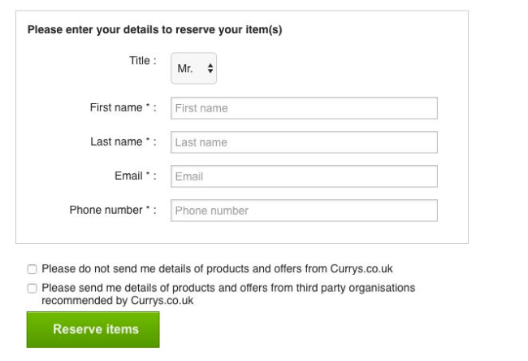

Wording is intentionally confusing so users choose the option the company wants. Double negatives, misleading labels, or reversed logic make “yes” feel like “no” and vice versa.
Users would usually check a box to opt in, but due to a subtle change in language that most users would miss, they instead have to check the box to opt out.
Trick questions take advantage of the way people skim content rather than read every word carefully. Instead of supporting informed decision-making, the design introduces cognitive traps that steer users toward the company’s preferred option. This is especially harmful for accessibility and inclusion, as non-native speakers, older users, or people with cognitive differences are disproportionately affected. The result is consent that is technically captured but ethically meaningless, because the user never truly understood what they agreed to.
Use plain, direct wording with clear defaults. Example: “Receive promotional emails?” with simple Yes / No options and neutral design.
Design for clarity over cleverness. Use straightforward language, single-direction logic, and accessible reading levels. Apply inclusive design practices such as readability testing and assistive-technology reviews. Consent should be enthusiastic and informed, not extracted through linguistic puzzles.